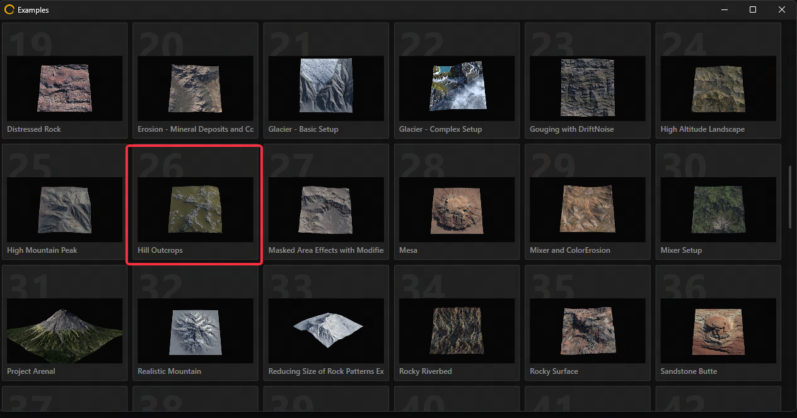

2026-08-16
Building a Production-Ready 4×4 km AAA-Scale Terrain Pipeline in Unreal Engine 5 Procedural Hillside Generation, Houdini & Gaea Tooling, PCG Integration, and Runtime Optimization
About This Article
To build a Preoduction-Ready 3A Terrain Pipeline.
“What I cannot create, I do not understand.” — Richard Feynman
Part Building a Minimal Gaea Terrain in UE5
Gaea Example Export
